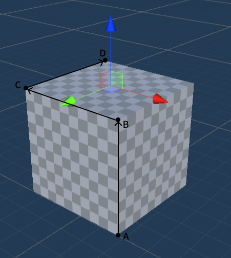

房间标定
房间标定是玩出梦想提供的系统级应用，用于确保虚拟对象和物理环境的精确对齐，通过房间标定，可以提高虚拟现实程序的真实感和稳定性，为用户提供更具交互性和沉浸感的体验。用户可以通过房间标定应用将现实房间中的墙、门窗、桌椅、沙发等物体标定出来。开发者可以通过 SDK 获取用户创建的标定数据，并将其使用在自己的应用中。
要求
你可以通过 SDK 接口获取房间标定应用创建的房间信息和标定数据，并将其用于自己的应用中，也可以在应用内创建自己的锚点。
- SDK 版本：Unity SDK 2.8.0 及以上
- 设备型号：YVR2，Play Form Dream MR
- 系统版本：DreamOS 1.3.0 及以上
Note
- 数据修改权限：第三方应用无法创建房间，仅允许房间标定应用修改数据
- 数据读取权限：房间标定应用和第三方应用可以读取房间标定数据
请确保已在 YVRManager 脚本面板上勾选了 Spatial Anchor Support 和 Scene Support 选框。
Note
勾选 Spatial Anchor Support 和 Scene Support 选框后，AndroidManifest.xml 文件中会添加锚点对应权限。
> <uses-permission android:name="com.yvr.permission.USE_ANCHOR_API"\> >
> <uses-permission android:name="com.yvr.permission.USE_SCENE"\>
com.yvr.permission.USE_SCENE is a runtime permission that allows the application to query spatial data on the user's device only when the user grants the permission. Requesting Android runtime permissions makes a permission request.
Scene Anchors 可以包含的组件类型
Scene Anchor 需要组件才能描述标定的环境。因此应用需要通过查询 Scene Anchor 是否支持给定的组件，以及该组件是否已启用，来获取锚点所包含的空间信息
- Locatable：可定位组件，通知系统可以跟踪此定位点，启用后，应用可以持续的查询定位点的位姿信息。
- Storable：可存储组件，启用后，表示锚点可以被保存。
- RoomLayout：房间布局组件，包含对构成房间的墙壁，天花板和地板锚点的引用。
- AnchorContainer：包含对房间内其他物体（沙发，茶几，窗户等）定位点列表的引用。
- Bounded2D：对 2D 平面数据的定位点信息，包含平面的宽高以及相对于锚点 x,y 轴上的偏移（或者是非矩形平面的索引三角形网格）。
- Bounded3D：3D 立方体数据，包含长宽高以及此立方体相对于锚点 x,y,z, 轴上的偏移。
- SemanticLabels：锚点的语义标签，此组件可以将锚点分为多个分类，详细信息参考下文。
常见场景锚点
房间的场景锚点将具有：
- RoomLayout 组件用于引用天花板、墙壁和地板。
- AnchorContainer 组件用于保存房间内所有的场景锚点。
2D 元素（如墙壁，天花板，地板，窗户等）的场景锚点具有：用户获取锚点位置的 Locatable 组件；SemanticLabels 语义标签组件；Boundary2D 平面尺寸数据。
3D 元素（如沙发，茶几，桌子等）的场景锚点具有：用户获取锚点位置的 Locatable 组件；SemanticLabels 语义标签组件；Bounded3D 立方体信息。

锚点语义分类
语义分类将 Scene Anchors 分类为预先确定且有系统管理的对象类型列表。语义将对象分隔到其对应的几何描述，以便为应用开发人员提供特定于分类的游戏逻辑。支持的语义标签：
| 语义类型 | 描述 | |
|---|---|---|
| FLOOR | 地板 | 2D |
| CEILING | 天花板 | 2D |
| WALL_FACE | 墙面 | 2D |
| COUCH | 沙发 | 3D |
| DOOR_FRAME | 门框 | 2D |
| WINDOW_FRAME | 窗框 | 2D |
| OTHER | 窗框 | 3D |
| TABLE | 桌子 | 3D |
| BED | 床 | 3D |
Note
此列表标签正在不断发展，因为我们会定期添加对更多 2D 和 3D 对象的支持。
锚点坐标轴
房间标定应用创建的 2D 元素和 3D 元素的坐标轴方向与其类型和创建顺序有关，规则如下：
墙面、门、窗
原点位于墙面中心
- +X：根据左手坐标系，从上往下看，逆时针方向
- +Y：垂直地面向上
- +Z：垂直于墙面向内
地板
原点位于地面的几何中心
- +X：从上往下看，顺时针沿着墙面指向第一个绘制的点的方向
- +Y：根据左手坐标系确定
- +Z：垂直朝上
天花板
原点位于天花板的几何中心
- +X：地面的 -X 方向
- +Y：根据左手坐标系确定
- +Z：垂直朝下
沙发、床、桌子和其他

第一条线 AB 画高度，然后画顶面的两条棱 BC 和 CD。原点位于顶面的中心
- +X：CB 方向
- +Y：根据左手坐标系确定
- +Z：AB 方向
获取房间标定数据接口
获取锚点的房间布局信息
YVRSceneAnchor.instance.GetAnchorRoomLayout 接口获取锚点的房间布局信息。
/// <summary>
/// 获取指定空间锚点的房间布局信息。
/// </summary>
/// <param name="anchorHandle">空间锚点的句柄</param>
/// <param name="roomLayout">返回的房间布局信息</param>
/// <returns>如果成功获取房间布局信息，则为 true；否则为 false</returns>
public bool GetAnchorRoomLayout(ulong anchorHandle, out YVRRoomLayout roomLayout)
YVRRoomLayout 包含房间地板、天花板、墙壁锚点的 UUID。
public struct YVRRoomLayout
{
// 地板锚点
public YVRSpatialAnchorUUID floorUuid;
// 天花板锚点
public YVRSpatialAnchorUUID ceilingUuid;
// 墙壁锚点列表
public YVRSpatialAnchorUUID[] wallUuids;
}
获取锚点的容器信息
YVRSceneAnchor.instance.GetAnchorContainer 接口获取锚点的容器信息。
/// <summary>
/// 获取指定空间锚点的容器信息。
/// </summary>
/// <param name="anchorHandle">空间锚点的句柄</param>
/// <param name="containerUuids">返回的容器 UUID 列表</param>
/// <returns>如果成功获取容器信息，则为 true；否则为 false</returns>
public bool GetAnchorContainer(ulong anchorHandle, out List<YVRSpatialAnchorUUID> containerUuids)
获取锚点的矩形平面
YVRSceneAnchor.instance.GetAnchorBoundingBox2D 接口提供对锚点矩形平面信息的访问。
/// <summary>
/// 获取指定空间锚点的二维边界框信息。
/// </summary>
/// <param name="anchorHandle">空间锚点的句柄</param>
/// <param name="boundingBox2D">返回的二维边界框信息</param>
/// <returns>如果成功获取边界框信息，则为 true；否则为 false</returns>
public bool GetAnchorBoundingBox2D(ulong anchorHandle, out YVRRect2D boundingBox2D)
YVRRect2D 包含平面的宽高以及相对与锚点位姿原点在 x,y 轴上的偏移。
public struct YVRRect2D
{
// 平面相对于锚点在 x,y 轴上的偏移
public Vector2 offset;
// 平面的宽高
public Vector2 extent;
}
获取锚点的三维边界框
YVRSceneAnchor.instance.GetAnchorBoundingBox3D 接口提供对锚点 3D 信息的访问。
/// <summary>/// 获取指定空间锚点的三维边界框信息。/// </summary>
/// <param name="anchorHandle">空间锚点的句柄</param>
/// <param name="boundingBox3D">返回的三维边界框信息</param>
/// <returns>如果成功获取边界框信息，则为 true；否则为 false</returns>
public bool GetAnchorBoundingBox3D(ulong anchorHandle, out YVRRect3D boundingBox3D)
YVRRect3D 包含 3D 对象的长宽高以及相对于锚点位姿原点在 x,y,z 轴上的偏移。
public struct YVRRect3D {
// 3D 对象相对于锚点原点在 x,y,z 轴上的偏移
public Vector3 offset; // L3D 对象的长宽高
public Vector3 extent;}
获取锚点的不规则平面顶点信息
YVRSceneAnchor.instance.GetAnchorBoundary2D 接口返回锚点的非矩形平面信息。
/// <summary>/// 获取锚点的平面顶点信息/// </summary>
/// <param name="anchorHandle">空间锚点的句柄</param>
/// <param name="boundary">返回平面的顶点集合</param>
/// <returns>如果成功获取边界信息，则为 true；否则为 false</returns>
public bool GetAnchorBoundary2D(ulong anchorHandle, out List<Vector2> boundary)
获取锚点的语义标签
YVRSceneAnchor.instance.GetAnchorSemanticLabels 接口返回锚点的语义标签。
/// <summary>/// 获取锚点的语义标签信息。/// </summary>
/// <param name="anchorHandle">空间锚点的句柄</param>
/// <param name="labels">返回的语义标签字符串</param>
/// <returns>如果成功获取语义标签信息，则为 true；否则为 false</returns>
public bool GetAnchorSemanticLabels(ulong anchorHandle, out string labels)
Note
当锚点支持的组件类型为 Bounded2D 类型是，既可以使用 GetAnchorBoundingBox2D 接口获取矩形平面数据，也可以使用 GetAnchorBoundary2D 获取平面的顶点数据。（若房间标定的平面为非矩形，此时使用 GetAnchorBoundingBox2D 时将根据平面顶点信息返回对应的最小外接矩形。）
启动房间标定应用
调用 YVRSceneAnchor.instance.RequestSceneCapture 接口可以启用房间标定引用进行房间标定。
获取房间标定数据流程
你可以通过以下流程来检索房间标定数据的内容：
- 通过 YVRSpatialAnchor.instance.QuerySpatialAnchor 接口查询具有组件 RoomLayout 的锚点。
- 对于查询到的 RoomLayout 组件锚点，通过 YVRSceneAnchor.instance.GetAnchorContainer 接口获取该房间标定下的所有子锚点。
- 通过 UUID 使用 YVRSpatialAnchor.instance.QuerySpatialAnchor 接口循环查询到所有子锚点。
- 对于查询到的子锚点，调用 YVRSpatialAnchor.instance.GetSpatialAnchorComponentStatus 检索其是否支持对应的组件类型。
- 如果想要了解尺寸，调用 GetAnchorBoundingBox2D ，GetAnchorBoundary2D 或 GetAnchorBoundingBox3D 返回对应信息，并相应的缩放 Unity 对象。
代码示例
private YVRSpatialAnchorResult m_RoomLayoutAnchor;
private List<YVRSpatialAnchorResult> m_ContainerAnchors = new List<YVRSpatialAnchorResult>();
// 获取 RoomLayout 组件的锚点
public void GetRoomLayoutAnchor()
{
YVRSpatialAnchorQueryInfo queryInfo = new YVRSpatialAnchorQueryInfo();
queryInfo.storageLocation = YVRSpatialAnchorStorageLocation.Local;
queryInfo.component = YVRSpatialAnchorComponentType.RoomLayout;
YVRSpatialAnchor.instance.QuerySpatialAnchor(queryInfo, OnQueryRoomLayoutAnchorCallback);
}
private void OnQueryRoomLayoutAnchorCallback(List<YVRSpatialAnchorResult> spatialAnchorResults)
{
if(spatialAnchorResults != null && spatialAnchorResults.Count >= 0)
{
m_RoomLayoutAnchor = spatialAnchorResults.First();
}
else
{
// 无标定信息，跳转至房间标定应用进行标定
YVRSceneAnchor.instance.RequestSceneCapture("");
}
}
// 获取房间标定下的所有锚点
public void GetAnchorAontainer()
{
if(m_RoomLayoutAnchor.anchorHandle == 0) return;
bool result = YVRSceneAnchor.instance.GetAnchorContainer(m_RoomLayoutAnchor.anchorHandle, out List<YVRSpatialAnchorUUID> container);
if (!result) return;
YVRSpatialAnchorQueryInfo queryInfo = new YVRSpatialAnchorQueryInfo();
queryInfo.storageLocation = YVRSpatialAnchorStorageLocation.Local;
queryInfo.ids = container.ToArray();
YVRSpatialAnchor.instance.QuerySpatialAnchor(queryInfo, OnQueryContainerCallback);
}
private void OnQueryContainerCallback(List<YVRSpatialAnchorResult> spatialAnchorResults)
{
m_ContainerAnchors = spatialAnchorResults;
}
// 获取不规则平面顶点信息
private void GetAnchorBoundary2DData(YVRSpatialAnchorResult anchor)
{
YVRSpatialAnchor.instance.GetSpatialAnchorComponentStatus(anchor.anchorHandle, YVRSpatialAnchorComponentType.Bounded2D, out YVRSpatialAnchorComponentStatus status);
if(status.enable)
{
YVRSceneAnchor.instance.GetAnchorBoundary2D(anchor.anchorHandle, out List<Vector2> boundary);
if (boundary!=null)
{
for (int i = 0; i < boundary.Count; i++)
{
Debug.Log($"boundary uuid:{new string(anchor.uuid)} index:{i} x:{boundary[i].x},y:{boundary[i].y}");
}
}
}
}
// 获取锚点矩形平面信息
private void GetAnchorBoundingBox2DDate(YVRSpatialAnchorResult anchor)
{
YVRSpatialAnchor.instance.GetSpatialAnchorComponentStatus(anchor.anchorHandle, YVRSpatialAnchorComponentType.Bounded2D, out YVRSpatialAnchorComponentStatus status);
if (status.enable)
{
YVRSceneAnchor.instance.GetAnchorBoundingBox2D(anchor.anchorHandle, out YVRRect2D boundingBox2D);
Debug.Log(
$"box2d uuid:{new string(anchor.uuid)} boundingBox2D offset.x:{boundingBox2D.offset.x},offset.y:{boundingBox2D.offset.y},extent.x:{boundingBox2D.extent.x},extent.y:{boundingBox2D.extent.y}");
}
}
// 获取锚点 3D 信息
private void GetAnchorBoundingBox3DDate(YVRSpatialAnchorResult anchor)
{
YVRSpatialAnchor.instance.GetSpatialAnchorComponentStatus(anchor.anchorHandle, YVRSpatialAnchorComponentType.Bounded3D, out YVRSpatialAnchorComponentStatus status);
if (status.enable)
{
YVRSceneAnchor.instance.GetAnchorBoundingBox3D(anchor.anchorHandle, out YVRRect3D boundingBox3D);
Debug.Log(
$"box3d uuid:{new string(anchor.uuid)} boundingBox3D offset.x:{boundingBox3D.offset.x},offset.y:{boundingBox3D.offset.y},offset.z:{boundingBox3D.offset.z},extent.x:{boundingBox3D.extent.x},extent.y:{boundingBox3D.extent.y},extent.z:{boundingBox3D.extent.z}");
}
}
// 获取锚点语义标签信息
private void GetAnchorSemanticLabelsDate(YVRSpatialAnchorResult anchor)
{
YVRSpatialAnchor.instance.GetSpatialAnchorComponentStatus(anchor.anchorHandle, YVRSpatialAnchorComponentType.SemanticLabels, out YVRSpatialAnchorComponentStatus status);
if (status.enable)
{
YVRSceneAnchor.instance.GetAnchorSemanticLabels(anchor.anchorHandle, out string semanticLabels);
Debug.Log($"semanticLabel anchor uuid:{new string(anchor.uuid)} semanticLabels:{semanticLabels}");
}
}
private void GetAnchoComponentData()
{
foreach (var anchor in m_ContainerAnchors)
{
GetAnchorBoundary2DData(anchor);
GetAnchorBoundingBox2DDate(anchor);
GetAnchorBoundingBox3DDate(anchor);
GetAnchorSemanticLabelsDate(anchor);
}
}
示例工程
更多详情，请参考 Scene Anchor Sample。